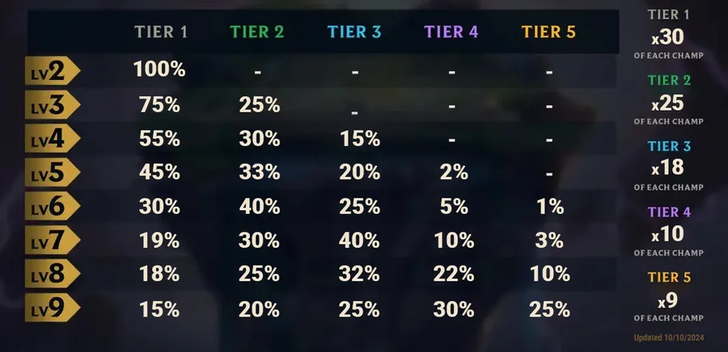

01
Qu'est-ce que Teamfight Tactics ?
TFT est un jeu de type « Auto-Battler » : vous devez composer une équipe de champions, issus de l'univers de League of Legends, qui combattra automatiquement contre les équipes des autres joueurs. Dans chaque partie, huit joueurs sont présents, ayant chacun 100 points de vie (HP). Au cours des différents rounds, les joueurs s'affrontent et les vaincus perdent des points de vie dont le montant dépend de l'avancement de la partie.
Lorsque votre barre d'HP atteint 0, la partie se termine pour vous, mais cela ne signifie pas nécessairement que vous avez perdu : vous êtes juste éliminé. Votre placement lors de votre mort détermine le résultat de votre partie (victoire ou défaite).
02
Structure du jeu
La partie se déroule en plusieurs phases :
Étape {{p.n}}
{{p.t}}
{{p.d}}
L'objectif principal est de composer la meilleure équipe pour affronter les autres joueurs et survivre le plus longtemps possible.
Astuce : pour les combats PvP, une indication à droite de l'écran montre quel adversaire vous pourriez affronter : si vous voyez deux épées sous le portrait d'un autre joueur, vous pouvez le rencontrer au tour suivant.
03
Concepts clés de TFT
TFT repose sur des notions fondamentales : les champions, les objets, les synergies et l'économie.
Les champions
Il existe cinq raretés de champions. Plus un champion est rare, plus il est cher, et moins il y a d'exemplaires dans la boutique :
Tier {{t.n}}
{{t.n}} PO
{{t.l}}
Chaque champion commence à 1 étoile. Trois copies identiques se combinent en un champion 2 étoiles (plus de points de vie, de dégâts, parfois de meilleurs effets de sorts) ; trois copies 2 étoiles forment la version 3 étoiles, la plus puissante.
La rareté influe grandement sur la croissance de puissance donnée par le niveau d'étoiles : plus un champion est rare, plus ses statistiques de base sont élevées, donc l'évolution d'un champion rare (par exemple Tier 4) sera beaucoup plus impactante que celle d'un champion commun (Tier 1).

Les objets
Les composants sont des sortes de mini-objets : combinez-en deux sur un champion pour créer un objet. Chaque champion peut porter jusqu'à trois objets, sauf restrictions liées à un set. Il existe plus d'une quarantaine d'objets différents (en plus de leur version radiante), en comptant les spatules et les artefacts ; leur disponibilité change avec les sets et les patchs.
Chaque champion a une spécificité (tank, dégâts physiques ou magiques…), indiquée en jeu. Les objets se divisent en catégories, comme les objets de dégâts et les objets de défense. Placez-les sur vos personnages les plus importants, vos carrys, en respectant leur rôle : un objet de tankiness sur un tank, un objet de dégâts sur un champion offensif. Gardez aussi un œil sur les objets adverses pour anticiper leurs stratégies et choisir des objets qui contrent leurs compositions.
Les synergies
Chaque champion a généralement deux ou trois synergies. Tout dépend de la méta et des sets : avoir tous vos champions avec la même synergie ne rend pas forcément votre équipe forte. L'idée est d'optimiser votre équipe selon les synergies de votre carry principal.
L'avis de Hato
Personnellement, je choisis mes synergies en fonction de mon carry principal. Votre équipe variera chaque fois que votre carry changera, ce qui apporte une flexibilité essentielle. Cette compétence viendra avec le temps ; n'hésitez pas à me poser vos questions.
L'économie
La gestion de votre or vous permet de contrôler votre partie. À la fin de chaque round, tous les joueurs reçoivent 5 or, plus un bonus d'intérêt qui s'accumule à chaque palier de 10 or.
Le système de niveau est très important : chaque niveau coûte de l'or (4 or = 4 XP). Vous placez autant de champions que vous avez de niveaux (niveau 5 = 5 champions), et plus votre niveau est élevé, plus vous avez de chances d'obtenir des champions rares dans le shop.
Certains joueurs attendent et se laissent taper pour revenir avec un maximum d'or ; d'autres, comme moi, jouent agressif pour préserver un maximum de HP. Avoir 80 or en poche ne sert à rien si vous êtes éliminé : surveillez votre barre de HP et n'hésitez pas à dépenser si votre composition est trop faible. À chaque round, demandez-vous s'il est rentable d'acheter de l'XP ou d'actualiser le shop, avec votre niveau et vos HP. Avec l'expérience, les réponses viendront naturellement.
04
Conseils pour progresser
{{t.n}}{{t.t}}
{{t.d}}